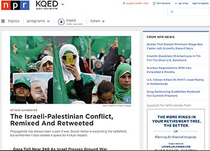
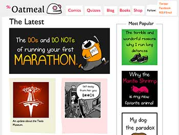

CSS Zen Garden
I mainly like this site becuase it gives me some inspiration about what CSS can end up doing. Visitors on the site are encouraged to click links that load different CSS style sheets just to see what different disigns look like. The HTML code is all the same.
My eye is drawn to the unity of the entire page. Each CSS style sheet produces an entirely new look and feel, but overall the designs are well integrated and creative. I would describe this site as elegant, integrated, serene, and simple.
From a content perspective, the site is designed to show what can be accomplished with advanced CSS techniques. The content is focused, broad, and inspirational. This is similar in feeling to how I described the overall design. Furthering the feel of unity.
Navigation is very simple on the site. The content is delivered simply and it is all easy to get at. After being on this site I feel inspired to create some great CSS designs!
NPR.org
I visit this site on a regular basis for news. My eyes are immediately drawn to the NPR logo and then fluidly down the center column and to the image where the first news posts start. When I stand further back, the image in the center column becomes the focus of my attention. The focus of this site is around news content and it is delivered in a very clear and easy to read manner. I would describe the site as simple, clear, basic, easy-on-the-eyes, and neutral.
NPR.org steers away from sensational and tabloid style stories to deliver relevant and timely news content, plain and simple. It seems like NPR is in direct opossition to other widely visited news sites (CNN.com, Fox News, etc) that focus on sensationalism and tabloid type news. The content is clear, precise, focused, and informative. Again, the content and design feel integrated. Content is easy to find with a prevelant seach bar on each page. The site usually leaves me feeling focused, albiet when I read too much bad news, kind of anxious...
The Oatmeal
I visit this on a weekly basis. The comics and cartoons are whimsical and fun! Usually there is some sort of wacky graphic that draws my eyes to it right away when I visit the page. While the graphics aren't very pretty or even good in some cases they are funny. When I stand back the text sort of seeps into the background and the only thing present is the graphic elements. This site is garish, funny, organized, quirky, and a little in-your-face! The graphic elements serve almost as an advertisement for the linked comic. I guess, in this way it is good to have my eyes focusing on the graphic elements.
The Oatmeal is essentally and artists site. Providing has unique view on the world. The content is oriented around personal comics. The are thought provoking and fun. I would describe the content as whimsical, personal, crass, and insightful. This content is integrated with the design look and feel.
The content is easily accessible, but if you don't know what you are looking for you just have to settle for what is up front. There is a search bar, but again if you don't know the name of what you want or aren't familair with the content you are just shooting in the dark. However, the "Most Popular" side bar is very useful for newbies on the site.
I usually get lost on the site for a while - arbitrarily looking at comics. The personal nature of the comics keeps it from having a "I just wasted a lot of time" feel to it. The site does sell poster, t-shirts, and other swaggy sorts of things. I havn't purchased anything from the site.